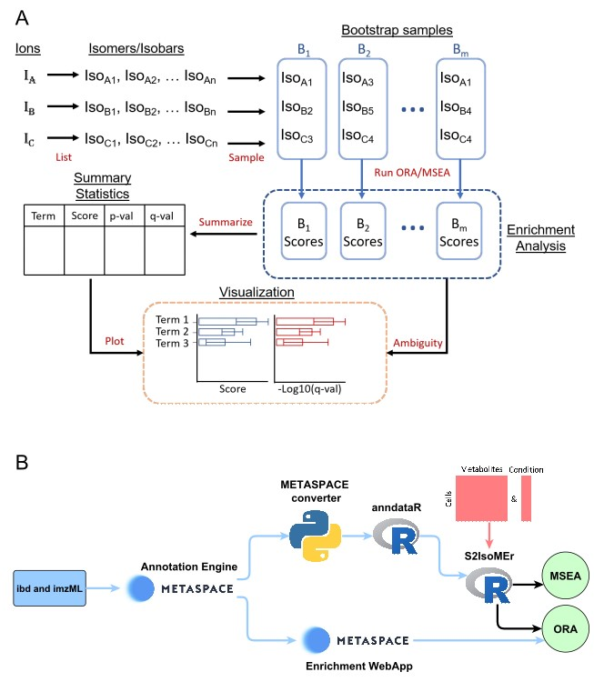

Overview
S2IsoMEr is an R package for metabolite enrichment analysis in imaging MS. S2IsoMEr can be applied to spatial and single-cell metabolomics datasets and addresses the challenge of metabolite identification ambiguity. The key idea to handle molecular isomers and/or isobars is to propagate the molecular ambiguity to the enrichment results as follows: We apply iterative random sampling (bootstrapping), perform enrichment analysis for each iteration, and report summarized results.

Installation
install.packages("devtools")
devtools::install_github("alexandrovteam/S2IsoMEr")Features
S2IsoMEr supports both overrepresentation analysis (ORA) and metabolite set enrichment analysis (MSEA) for metabolite and lipid-based backgrounds. Metabolite backgrounds are curated from RAMP-DB 2.0, encompassing biological pathways and metabolic classes, which are further categorized into super, main, and sub-classes. The pathways from RAMP-DB integrate multiple resources, including SMPDB, Reactome, KEGG, and WikiPathways. For lipids, similar background types are provided, with the addition of the LION lipid ontology. Except for the LION ontology, each term is mapped to either molecule names or sum formulas, allowing enrichment analysis to be performed with or without consideration of isomeric/isobaric ambiguity.
Licence
S2IsoMEr is licensed under the MIT License. See the LICENSE file for more details.